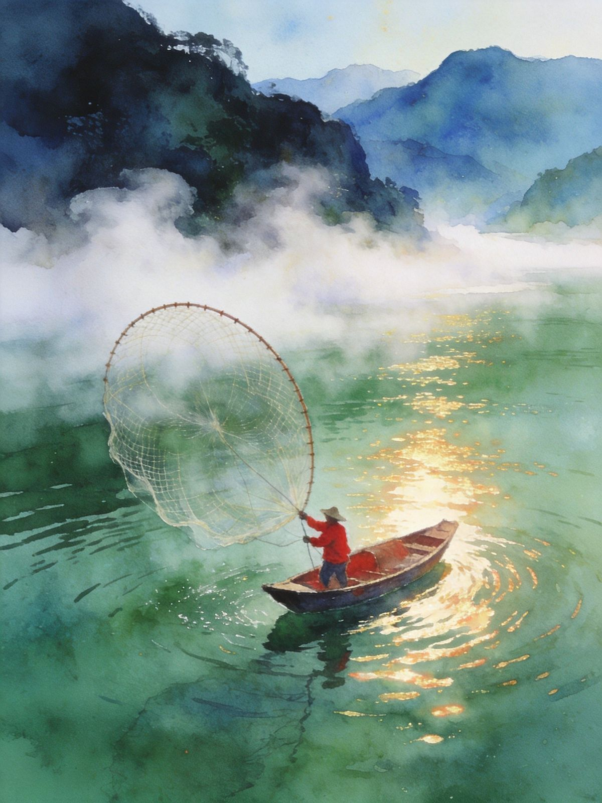
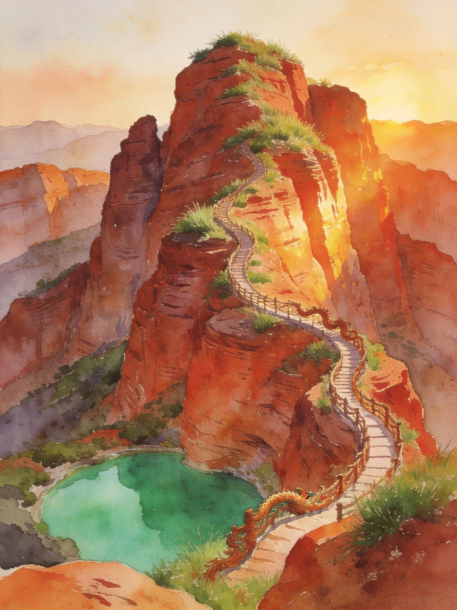
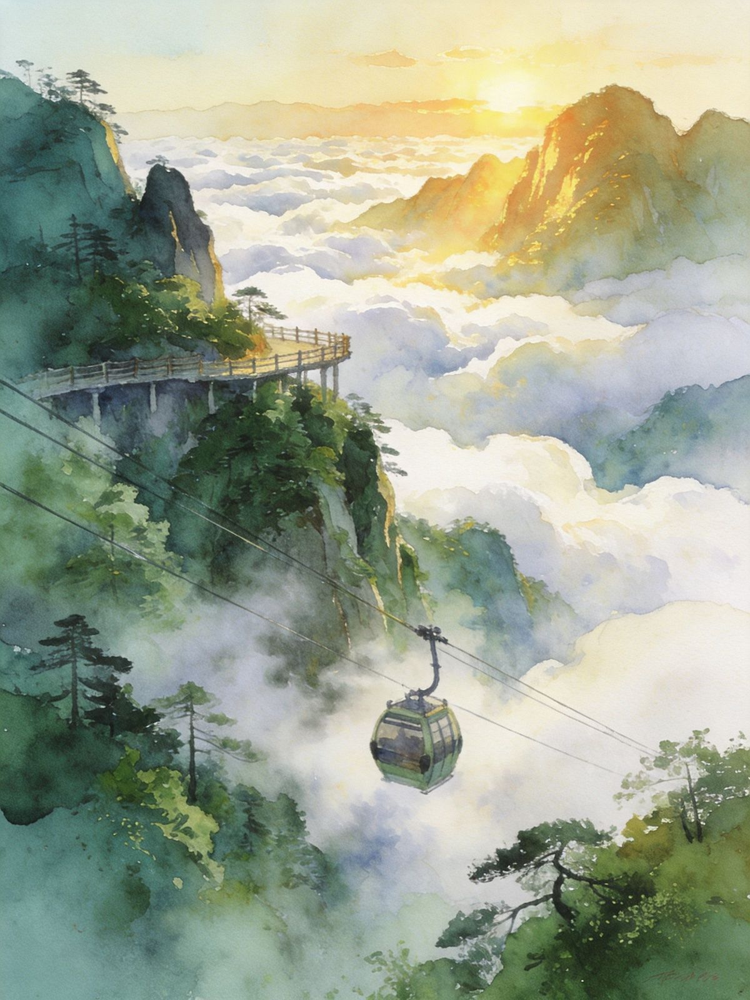

封面
总览
2天版
3天版
东江湖
高椅岭
莽山
仰天湖·白廊
美食
避坑贴士

CHENZHOU · 郴州
雾漫东江
丹霞 · 云海 · 水墨仙境
5A东江湖晨雾
高椅岭丹霞
莽山云海
2-3天
湘南秘境 · A5 口袋卡 · 自驾最自由
1
/ 10
郴州 · 湘南秘境
动线总览
2-3 天怎么选
Route Overview
2天
紧凑
两大名片速览
高椅岭+仰天湖昼 → 夜宿市区；次日清晨东江湖看雾 → 龙景峡谷 → 返程
3天
从容
山水云海全收
D1 高椅岭+白廊；D2 清晨东江湖+兜率溶洞；D3 莽山五指峰云海 → 返程
必看
看雾是灵魂
4-10月清晨 5:30-8:00「雾漫小东江」最佳，住东江湖附近并早起
TIP
起早拿雾、傍晚上高椅岭，
光线是最大的加分项
；两个可选短线（仰天湖/白廊）按体力加。
2
/ 10
郴州 · 湘南秘境
2天1夜 · 不绕路
Day·1
丹霞与草原
抵郴州西站
→
高椅岭（傍晚）
→
仰天湖草原
→
夜宿市区
🏞 高椅岭（午后到傍晚）
湖南最美丹霞：红岩山脊披青草，山脚翡翠碧潭，
红岩配绿水全国独一份
走龙脊背栈道、看巨蜥湖，傍晚光线斜、人少、山体镀暖金
Day·2
晨雾与返程
05:30 东江湖看雾
→
龙景峡谷
→
吃东江鱼
→
返程
🌫 雾漫小东江（灵魂）
清晨6-8:30江面平流雾如白纱，
2/3号观景台
有渔夫定点撒网
看完雾正好吃新鲜
东江鱼
，性价比极高
TIP
大胆早起，
看雾错过就没了
；回程前把鱼粉早餐安排上。
3
/ 10
郴州 · 湘南秘境
3天2夜 · 山水云海
Day·1
丹霞 + 环湖
高椅岭
→
白廊环湖
🌊 白廊 · 小洱海
东江湖畔免费高颜值环湖路，湖天一色、远山如黛，骑行/自驾吹湖风
坐游船看湖面小岛，湖畔野餐看日落，节奏松紧结合
Day·2
晨雾 + 溶洞
东江湖看雾
→
兜率岛溶洞
→
郴州古镇
🛶 兜率岛溶洞
乘船抵石灰岩溶洞，石笋石幔千姿百态，
精品线178元含船+溶洞
Day·3
云海返程
莽山五指峰云海
→
返程
TIP
3天最舒服，
每天只排一个主题
，光线全掐得住。
4
/ 10
郴州 · 湘南秘境
5A景区 · 东方瑞士
东江湖
· 160km²大湖
Dongjiang Lake
⏰ 看雾黄金时段（4-10月）
清晨
6:00-8:30
，太阳升高雾散；经典机位
2号 / 3号观景台
红衣渔人定时撒网，晨光里白雾·青山·小舟，水墨成画
🎫 门票
大门票
80元
（含景区大巴）；精品线
178元
含船 + 溶洞
龙景峡谷 · 四个瀑布群 + 原始森林，负氧离子爆表

东江碧水
TIP
住东江湖附近，
早起比什么都值
；看完雾回头吃一条东江鱼。
5
/ 10
郴州 · 湘南秘境
丹霞奇景
高椅岭
Gaoyiling Danxia
🏞 湖南最美丹霞
连绵红岩山脊长满青草，山脚围一汪汪
翡翠碧潭
，红配绿全国独一份
被网友称为「被上帝遗忘的地方」，日出片率极高
📸 必打卡
龙脊背栈道
：沿山脊走一圈，俯瞰碧潭红岩
巨蜥湖 / 神龟出海
：丹霞与绿湖的自然组合，航拍震撼
悬空栈道
：网红打卡点，玻璃段刺激又出片
红岩绿水
TIP
傍晚去
：光线斜、人少、山体镀金；中午顶光最差。
6
/ 10
郴州 · 湘南秘境
南岭原始森林
莽山五指峰
Mangshan Cloud Sea
🚡 无障碍看云海
全球单线最长索道之一 + 140米垂直电梯 + 11公里云间栈道，
不爬台阶登顶
老人小孩都能舒适看景，雨后初晴云海最佳
🍃 四季看点
春：杜鹃花开满山 · 秋：红叶层林尽染
冬：雾凇冰挂，银装素裹
被誉为「第二西双版纳」

云海索道
TIP
门票约
120元
+ 索道往返约
240元
；山顶风大备外套。
7
/ 10
郴州 · 湘南秘境
可选短线
仰天湖 · 白廊
Optional Detours
🍃 仰天湖大草原
「南国大草原」高山草甸，风车在山脊转动，草甸像绿毯
喂小鹿 / 草原骑马，网红秋千 + 风车矩阵，傍晚草原日落
市区车程约
1.5h
，山路注意；海拔高、紫外线强，防晒外套必备
🌊 白廊环湖 · 小洱海
东江湖畔免费环湖路，湖天一色，骑行/自驾吹湖风超惬意
适合看雾那天的下午顺路安排
TIP
两条都是
叠加项
，时间宽裕再上——别为赶点牺牲看雾和丹霞。
8
/ 10
郴州 · 湘南秘境
舌尖湘南
郴州必吃
Local Flavors
🍜 早餐灵魂
栖凤渡鱼粉
— 红油+鲜鱼+爽滑米粉，越不起眼的老店越地道
一碗几块钱，便宜又满足
🐟 湖鲜 & 硬菜
东江湖鱼
— 看完雾正好吃，湖鲜新鲜平价
临武血鸭
— 鸭血裹鸭肉，香辣浓油硬菜
烧鸡公
/
水煮活鱼干锅
— 本地馆子点菜不踩雷
TIP
鱼粉认准老店，
越不起眼越好吃
；早上先把胃留给它。
9
/ 10
郴州 · 湘南秘境
出发前
交通与避坑
Getting Around
🚄
怎么去
高铁到
郴州西站
（广深1h+），景点分散，自驾/包车最自由
😴
别睡过头
看雾务必早起，6-8:30黄金期，错过就没了
☀️
掐光线
高椅岭傍晚去，中午顶光最差；丹霞要傍晚的光
💰
莽山费用
门票120 + 索道往返240不便宜但值回票价；山顶超冷备外套
🌤
最佳季节
春秋最佳，夏天山里反而清凉避暑
10
/ 10
← 返回小册子主目录
Insta360
记录美好
记录美好生活
相机指南 · CAMERA GUIDE